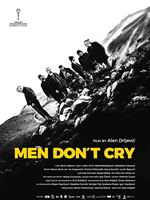

Jasmila Zbanic's filmography
Le choix de Luna - Jasmila Zbanic - 9 February 2011

Les femmes de Visegrad - Jasmila Zbanic - 30 april 2014
Love Island - Jasmila Zbanic - Release date unknown
La vie d'Aida - Jasmila Zbanic - 22 septembre 2021

Men don't cry - Jasmila Zbanic - 10 january 2022

The last of us - Jasmila Zbanic - Release date unknown